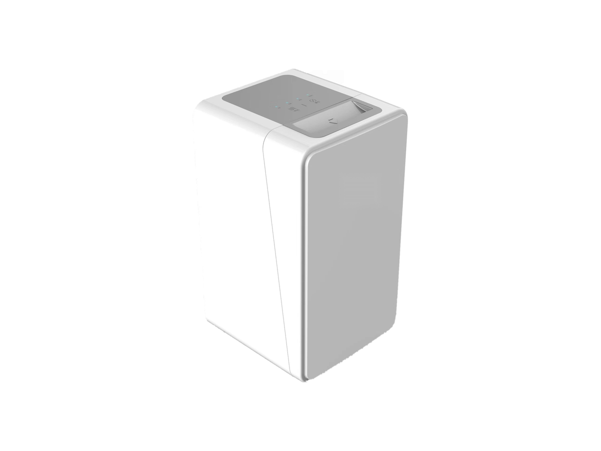

Под мойку
Под мойкуRP-U07
RO-очиститель под мойку 400–600 GPD
SKU: RP-U07
MOQ: уточняйте при запросе
Главная/Продукция/Системы RO под мойку/ RP-U08

Системы RO под мойку
RO под мойку с накопительным нагревом (M2209RN)
RP-U08 — RO под мойку с накопительным нагревом. Ключевая характеристика: производительность RO 800 GPD. Вторая конфигурация покрывает 400–800 GPD, с нагревом через опцию крана мгновенного нагрева. Характеристики подтверждаются для каждой модели и заказа.
Напряжение / частота настраиваются под страну назначения. Другие конфигурации подтверждаются для каждого заказа.
RP-U08 — это RO-очиститель под мойку с горячей водой, в двух конфигурациях. Конфигурация с накопительным нагревом работает на 800 GPD с накопительным баком горячей воды 2 л (1200 Вт, поддержание 75 °C) и номинальной мощностью 2200 Вт. Вторая конфигурация покрывает 400–800 GPD с расходом ≥1.05–2.0 л/мин и нагревом через опцию крана мгновенного нагрева (20 л/ч), с классом 1 водоэффективности. Обе конфигурации прячутся под мойкой и оставляют столешницу свободной.
Каков минимальный объём заказа?
Первый заказ — 200 единиц на модель, повторные заказы — 500 единиц.
Можно ли заказать образец до оптового заказа?
Да. Образцы готовы через 15 дней, стоимость образца возвращается при первом оптовом заказе. Оптовые заказы занимают 40 дней после утверждения образца и отгружаются FOB Шэньчжэнь.
Какую конфигурацию выбрать?
Указывать RP-U08 и уточнять конфигурацию: накопительный нагрев 800 GPD (бак 2 л, 1200 Вт, поддержание 75 °C) или 400–800 GPD с опцией крана мгновенного нагрева (20 л/ч, класс 1 водоэффективности).
Две конфигурации — указывать RP-U08 и уточнять конфигурацию (накопительный нагрев 800 GPD или 400–800 GPD с опцией крана мгновенного нагрева).
Наведите курсор на изображение варианта, чтобы увидеть его спецификации. На сенсорных экранах коснитесь изображения.

Полные характеристики каждой разновидности, рядом. В таблице характеристик ниже приведены значения накопительного нагрева RP-U08.
| Спецификация | RP-U08-1 — накопительный нагрев (M2209RN) | RP-U08-2 — 400–800 GPD (M2201RN) |
|---|---|---|
| Производительность RO | 800 GPD | 400–800 GPD |
| Номинальная мощность | 2200 W | 72–96 W; 2200 W с опцией крана с мгновенным нагревом |
| Размеры (Д×Ш×В) | 345 × 220 × 385 mm | 220 × 220 × 395 mm |
| Номинальный объём очищенной воды | Подтверждается по заказу | 4000 L |
| Расход производства воды | Подтверждается по заказу | ≥1.05–2.0 L/min (в зависимости от класса производительности) |
| Фильтрация | Композит PP/уголь + RO | Композит PP/уголь + RO + пост-уголь (настраивается) |
| Нагрев | Бак-накопитель 2 L, 1200 W, поддержание 75 °C | Опция крана с мгновенным нагревом, 20 L/h |
| Расход воды 45 °C | ≥1.3 L/min | Подтверждается по заказу |
| Класс водоэффективности | Подтверждается по заказу | Класс 1 |
| Напряжение / частота | Настраивается под страну назначения | 220 V ~ 50 Hz, настраивается под страну назначения |
9 строк спецификаций из каталога ROPureOEM.
| Производительность RO | 800 GPD |
|---|---|
| Номинальная мощность | 2200 W |
| Размеры (Д×Ш×В) | 345 × 220 × 385 mm |
| Бак горячей воды | 2L |
| Мощность нагрева бака | 1200 W |
| Температура поддержания бака | 75°C |
| Расход воды 45 °C | ≥1.3 L/min |
| Напряжение / частота | Настраивается под страну назначения |
| Другие конфигурации | Подтверждается по заказу |
Спецификации взяты из каталога ROPureOEM. Если значение ещё не подтверждено, оно указано как «Подтверждается при заказе» — мы не публикуем неподтверждённые цифры.
Под мойкуRO-очиститель под мойку 400–600 GPD
SKU: RP-U07
MOQ: уточняйте при запросе
 Под мойку
Под мойкуВысокопроизводительный RO-очиститель с фронтальным доступом
SKU: RP-U09
MOQ: уточняйте при запросе
 Под мойку
Под мойкуRO-очиститель с тремя картриджами
SKU: RP-U11
MOQ: уточняйте при запросе
 Под мойку
Под мойкуКомпактный RO-очиститель с двумя картриджами
SKU: RP-U12
MOQ: уточняйте при запросе